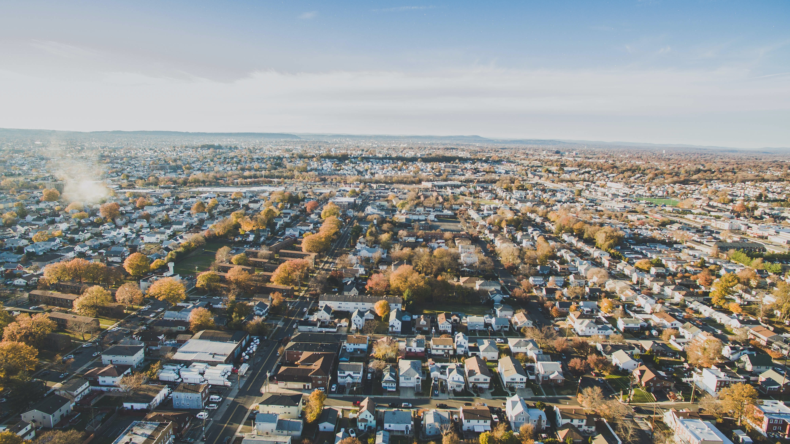

America's Third State!
Welcome to the Garden State, where New Jersey's vibrant spirit and beautiful sceneries come together to create a fun experience! Located along the stunning Atlantic coastline, our state has beautiful beaches, charming small towns, and bustling cities. From the historic town of Princeton to the playful city of Atlantic City, New Jersey really has something for everyone. Explore our deep history, enjoy our delicious food, and have fun in our friendly communities. If you're walking through our pretty parks or celebrating your favorite sports team, New Jersey wants you to discover the energy that make us proud to call this state home!
- Tomato Pie
- Pork Roll
- Hoagies
Top 3 Jersey Foods
| City | Famous Dish | Landmark |
|---|---|---|
| Trenton | Tomato Pie | New Jersey State House |
| Hoboken | Speghetti Pomodoro | Stevens Institute of Technology |
| Cape May | Clam Chowder | Cape May Lighthouse |